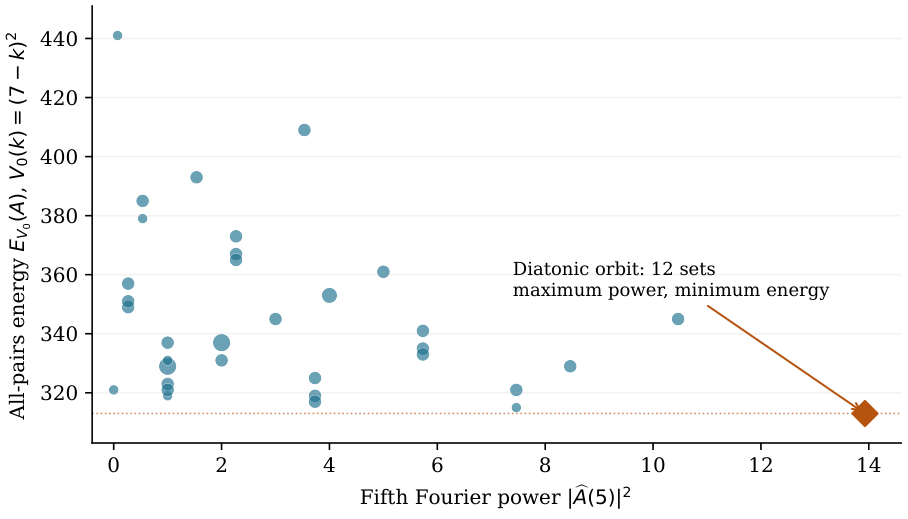

Huddling, diatonic and pentatonic scales in Z12: Fourier maxima and convex-energy minima formalized in Lean 4
At a glance
What the paper contributes
- A connected Lean 4 formalization, with complete twelve-tone equality conditions, of why the seven white keys solve two optimization problems: they maximize $|\widehat A(5)|$ and minimize every strictly admissible convex pair energy (Theorem 3).
- The route: Huddling in $\mathbb{Z}_{12}$ (Theorem 1), transported to frequency five by $M_5$; double Abel summation for the energy (Theorem 2); complementation carries both to the pentatonic sets (Theorem 4).
- Exact arithmetic throughout: comparisons in $\mathbb{Z}[\sqrt3]$, no rounded trigonometric values. Two finite censuses use
native_decide(trusted compiled evaluation), stated in the axiom audit. - The mathematics is classical; the paper claims the connected formalization, not a new characterization.
🚀 Start here: Theorem 1: consecutive arcs maximize the first Fourier magnitude, exactly on their transposition orbit.
Main results:
- Theorem 3: Fourier maximum and energy minimum have the same equality class: the twelve diatonic transpositions
- Theorem 4: the pentatonic sets inherit both extremal properties through complementation
🗺️ Map of the results (click a box to go to it)
Dependencies in the written proof: an arrow A → B means that this proof of B uses A. Every result rests on its written proof; the tags record what was checked besides, and each statement's “Evidence & scope” block says how far. The colour of a box is its strongest tag, in the order above; the tags in the box give the rest. Boxes with a thick border are the main results; click a box to read the statement.
📐 Setting (copied from the paper, §2)
For an unweighted set \(A\subseteq \mathbb {Z}_{12}\), use the unnormalized DFT
Transposition \(T_sA=A+s\) changes phase and preserves \(S_t\). For a unit \(u\in \mathbb {Z}_{12}^\times \), put \(M_uA=\{ ua:a\in A\} \). Reindexing the finite sum gives \(\widehat{M_uA}(t)=\widehat A(ut)\). For \(C_7=\{ 0,1,2,3,4,5,6\} \) and \(D=\{ 0,2,4,5,7,9,11\} \), \(T_{11}M_5C_7=D\) and \(M_5D=T_7C_7\). (§4) Write \(d(a,b)=\min ((a-b)\bmod 12,(b-a)\bmod 12)\). For a real potential \(V:\{ 1,\ldots ,6\} \to \mathbb R\), the all-pairs energy is \(E_V(A)=\sum _{\{ a,b\} \subseteq A}V(d(a,b))=\sum _{j=1}^{6}i_j(A)V(j)\). We call \(V\) admissible when \(\Delta ^2V(j):=V(j)-2V(j+1)+V(j+2)\ge 0\) \((1\le j\le 4)\) and \(V(6)\le V(5)\). Strict admissibility means that all five displayed inequalities are strict.
What this blueprint shows.
The numbered statements of the paper, with their proofs, dependencies and what checked them, under the sections that hold them (with the paper’s numbers), and the figures and tables they use. The full text is in the PDF of the paper.
3 What Huddling contributes
For every \(A\subseteq {\mathbb {Z}_{12}}\), with \(k=|A|\) and \(C_k=\{ 0,\ldots ,k-1\} \),
The same inequality and equality condition hold for Fourier magnitudes.
Lean · ours, in partshow
added to the Lean repository after publication (23-oct-2026): the general statement for every cyclic group Z_N (Amiot’s Lemma 2, of which the paper certifies the twelve-tone instance): for every unit frequency the arc maximizes the Fourier magnitude, exactly on its translates, and the maximum is sin(πm/N)/sin(π/N); added to the Lean repository after publication (23-oct-2026): the general statement for every cyclic group Z_N (Amiot’s Lemma 2, of which the paper certifies the twelve-tone instance): for every unit frequency the arc maximizes the Fourier magnitude, exactly on its translates, and the maximum is sin(πm/N)/sin(π/N)
MusicTheory.Huddling.arc_maximizes_powerMusicTheory.Huddling.arc_uniqueMusicTheory.MTransform.powerSpec_one_re_le_iffMusicTheory.CyclicHuddling.norm_Ahat_unit_le_arcMusicTheory.CyclicHuddling.norm_Ahat_unit_eq_arc_iffMusicTheory.CyclicHuddling.norm_Ahat_unit_le_sine_ratioMusicTheory.CyclicHuddling.norm_Ahat_unit_eq_sine_ratio_iffMusicTheory.CyclicHuddling.norm_Ahat_arc_sine_ratio
✅ Checked when this page was built: CyclicHuddlingClosedForm.lean, CyclicHuddlingGeometry.lean, Huddling.lean, MTransform.lean compiles with Lean 4.35.0, no errors, no sorry. Axioms — arc_maximizes_power, arc_unique, powerSpec_one_re_le_iff, norm_Ahat_unit_le_arc, norm_Ahat_unit_eq_arc_iff, norm_Ahat_unit_le_sine_ratio, norm_Ahat_unit_eq_sine_ratio_iff, norm_Ahat_arc_sine_ratio: propext, Classical.choice, Quot.sound.
Reproduce: Lean 4.35.0, Mathlib f0b4c8150aa0; in that Lean project, lake env lean CyclicHuddlingClosedForm.lean CyclicHuddlingGeometry.lean Huddling.lean MTransform.lean (SHA-256 of the compiled file: e53d6d27167c0ac7…; a source page on this site may show it with comments edited, under its own hash).
🆕 Classical and new: classical: the roots-of-unity lemma recorded by Amiot [Amiot2009, Lemma 2]; the paper certifies its twelve-tone instance with the complete equality class.
↳ Used in: Theorem 3
💡 In plain words (commentary, not part of the paper)
Put the twelve pitch classes on a clock and give each note of \(A\) a unit arrow pointing at its hour; \(\widehat A(1)\) is the sum of the arrows and \(S_1(A)\) its squared length. Arrows pointing in nearly the same direction add up best, so among all sets with \(k\) notes the longest sum comes from \(k\) consecutive hours, a “huddled” arc, and only from the twelve rotations of that arc (one set when \(k=0\) or \(12\)). This is the twelve-tone instance of the roots-of-unity lemma recorded by Amiot; the paper does not claim it as new. What it adds is a proof without rounded cosines: it writes \(2S_1(A)=P(A)+Q(A)\sqrt3\) with integers \(P,Q\) counted from the intervals of \(A\), so every comparison is exact in \(\mathbb {Z}[\sqrt3]\), and it checks all \(2^{12}=4096\) sets.
🛡️ Evidence & scope
Program: all 4096 subsets, by integer pairs (P,Q) in ℤ[√3]. huddling_verify.py
Program: all 4096 subsets, Fourier sums in Q(ζ₁₂) with exact algebraic-real comparison (SageMath). sage/huddling_check.py
🧪 Lab: Figure 1 with your own set, unit and shift
Applies \(T_s M_u\) to a set \(A\subseteq \mathbb {Z}_{12}\): the two clocks, the Fourier magnitudes of both (\(M_u\) permutes the frequencies), and a torus on which every pitch class sits on the chromatic circle and on the circle of fifths at once: \(M_5\) swaps the two circles.
|
\(k\) |
Sets checked |
\(2S_1(C_k)\) |
Maximizers |
|
\(0,12\) |
\(1\) each |
\(0\) |
\(1\) each |
|
\(1,11\) |
\(12\) each |
\(2\) |
\(12\) each |
|
\(2,10\) |
\(66\) each |
\(4+2\sqrt3\) |
\(12\) each |
|
\(3,9\) |
\(220\) each |
\(8+4\sqrt3\) |
\(12\) each |
|
\(4,8\) |
\(495\) each |
\(12+6\sqrt3\) |
\(12\) each |
|
\(5,7\) |
\(792\) each |
\(14+8\sqrt3\) |
\(12\) each |
|
\(6\) |
\(924\) |
\(16+8\sqrt3\) |
\(12\) |
Colour: blue shade = the number’s size within its column.
4 Why the energy selects the same collection
For every admissible \(V\) and every \(A\subseteq {\mathbb {Z}_{12}}\) with \(|A|=7\), \(E_V(D)\le E_V(A)\). If \(V\) is strictly admissible, then
Lean · ours, in partshow
the Abel identity symbolically; the seven-note certificate H_j ≥ 0 by native_decide
✅ Checked when this page was built: AllPairsEvenness.lean, DiatonicExtremality.lean compiles with Lean 4.35.0, no errors, no sorry. Axioms — abel_bridge, diatonic_energy_unique: propext, Classical.choice, Quot.sound.
Reproduce: Lean 4.35.0, Mathlib f0b4c8150aa0; in that Lean project, lake env lean AllPairsEvenness.lean DiatonicExtremality.lean (SHA-256 of the compiled file: b6d144324b2b8efa…; a source page on this site may show it with comments edited, under its own hash).
🆕 Classical and new: classical viewpoint (Douthett–Krantz [DK]); the contribution is the formalization with the complete equality class.
↳ Used in: Theorem 3
💡 In plain words (commentary, not part of the paper)
Let every pair of notes of \(A\) repel each other with a strength \(V(d)\) that depends only on their distance \(d\) around the clock, and add over the \(21\) pairs of a seven-note set: that is the energy \(E_V(A)\). If closer pairs repel more (\(V\) nonincreasing) and the repulsion falls off in a convex way, the diatonic collection \(D\) has the least energy of all seven-note sets; if the falling-off is strictly convex, only its twelve transpositions do. The proof subtracts the two energies and, by summing by parts twice, writes the difference as a sum of the second differences of \(V\) times numbers \(H_j\) that depend only on the intervals of \(A\) and \(D\); a census shows \(H_j\ge 0\) for all \(792\) seven-note sets. Strictness matters: with \(V\) constant every seven-note set has energy \(21\) (the paper’s own example).
5 The two questions have one equality class
For every strictly admissible \(V\) and every seven-element \(A\subseteq {\mathbb {Z}_{12}}\),
Both sides hold precisely for the twelve transpositions of \(D\).
✅ Checked when this page was built: DiatonicExtremality.lean, Huddling.lean compiles with Lean 4.35.0, no errors, no sorry. Axioms — spectral_energy_equivalence, diatonic_norm_unique, fifth_frequency_unique: propext, Classical.choice, Quot.sound.
Reproduce: Lean 4.35.0, Mathlib f0b4c8150aa0; in that Lean project, lake env lean DiatonicExtremality.lean Huddling.lean (SHA-256 of the compiled file: b39e90bd655cefdb…; a source page on this site may show it with comments edited, under its own hash).
🆕 Classical and new: the paper calls it a corollary of published equality-class characterizations, not a new characterization (§9).
↳ Used in: Theorem 4
Equation (4) identifies the left-hand equality class with \({\mathcal O_D}\). Theorem 2 identifies the right-hand equality class with \({\mathcal O_D}\). This is DiatonicExtremality.spectral_energy_equivalence.
💡 In plain words (commentary, not part of the paper)
Two questions about seven-note sets, with one answer. Which sets are most aligned with the circle of fifths, that is, have the largest fifth Fourier magnitude \(|\widehat A(5)|\)? Multiplying every note by \(5\) turns the circle of fifths into the chromatic circle, so Theorem 1 answers: the sets that become a consecutive arc, which are the twelve transpositions of the diatonic collection, with \(|\widehat A(5)|=2+\sqrt3\). Which sets have the least strictly convex pair energy? Theorem 2 answers: the same twelve. So for seven-note sets the two properties are the same property. The paper presents this as the conjunction of known characterizations (a corollary), formalized as one Lean theorem.
🛡️ Evidence & scope
Program: all 792 seven-note sets at frequency five, two arithmetic routes. huddling_verify.py, sage/huddling_check.py
Program: the three language tabs of this theorem: the 12 maximizers of |Â(5)| are the 12 minimizers of E_V for four strictly convex nonincreasing V, and the transpositions of D; controls: V constant gives all 792, V concave not the twelve (a check of the blueprint, published with it). lab/comprueba_pestanas.py
🧪 Lab: Figure 2: every set, in Fourier and in energy, for your own potential
All \(k\)-note sets as points \((S_1, S_5, E_V)\) with \(V(j)=(7-j)^p\): the maximizers of \(S_5\) (orange) and how the minimum of the energy follows them only when \(V\) is strictly convex (\(p{\gt}1\)).
🔤 Read this theorem in another mathematical language
Commentary, not part of the paper. Read a seven-note set as a binary signal of length \(12\). Its magnitude at frequency bin \(5\) is at most \(2+\sqrt3\), and only the twelve cyclic shifts of the diatonic signal reach it; those same shifts are the only seven-sample signals of least energy for every strictly convex, nonincreasing pair potential on the cyclic distance.
Commentary, not part of the paper. Seven identical particles sit on \(12\) sites of a ring and repel each other with a strength \(V(d)\) of their cyclic distance, strictly convex and nonincreasing. The configurations of least energy are exactly the twelve rotations of \(D=\{ 0,2,4,5,7,9,11\} \), and they are exactly the configurations that maximize the order parameter \(\bigl|\sum _{a}e^{-2\pi i\, 5a/12}\bigr|\), with maximum \(2+\sqrt3\).
Commentary, not part of the paper. Up to transposition, the white-key collection is the only seven-note collection that is at once the most strongly aligned with the circle of fifths (the largest fifth Fourier magnitude) and the most evenly spread under any strictly convex repulsion between its notes. Neither property selects a tonic or a mode: both see the collection, not its order.
🖼️ Figure 2

All \(792\) seven-note sets, grouped into \(34\) exact (Fourier power, energy) classes; marker area increases with multiplicity. The diamond represents the twelve diatonic transpositions, simultaneously at the largest \(S_5\) and the smallest \(E_{V_0}\). Coordinates are computed exactly before conversion to plotting numbers. Coincidence of the optimizers does not assert an ordering correspondence for every pair of sets.
6 What happens to the five notes left over?
For every five-element \(A\subseteq {\mathbb {Z}_{12}}\), \(|{\widehat A}(5)|\le 2+\sqrt3\). For every admissible \(V\), \(E_V(P)\le E_V(A)\). Under strict admissibility,
✅ Checked when this page was built: ExtremalityConnections.lean compiles with Lean 4.35.0, no errors, no sorry. Axioms — pentatonic_spectral_energy_equivalence, pentatonic_energy_gap, energy_compl: propext, Classical.choice, Quot.sound.
Reproduce: Lean 4.35.0, Mathlib f0b4c8150aa0; in that Lean project, lake env lean ExtremalityConnections.lean (SHA-256 of the compiled file: 1c529e4f4155bab6…; a source page on this site may show it with comments edited, under its own hash).
🆕 Classical and new: complement-energy transport is covered in greater generality by Bushaw, Cody and Leffler [BCL, Thms 2.16 and 3.5].
↳ Not used by another result of the paper.
Formalized in Lean (see the linked declarations).
💡 In plain words (commentary, not part of the paper)
The five black keys are the complement of the seven white keys. Complementing a set only flips the sign of its Fourier coefficients away from frequency \(0\), so magnitudes are kept; and it changes the energy by an amount that depends only on how many notes the set has, \(E_V(A^c)-E_V(A)=(6-|A|)\bigl(2\sum _{j=1}^5V(j)+V(6)\bigr)\). So the five-note problem is the seven-note problem seen in a mirror: the pentatonic sets \(T_sP\) inherit both extremal properties, with no new census. The complement identity is a case of a theorem of Bushaw, Cody and Leffler for distance-degree-regular graphs, as the paper says.
References
- 1
D. Lewin, “Re: Intervallic relations between two collections of notes,” Journal of Music Theory 3(2) (1959), 298–301. doi:10.2307/842856.
- 2
J. Clough and J. Douthett, “Maximally even sets,” Journal of Music Theory 35(1/2) (1991), 93–173. doi:10.2307/843811.
- 3
E. Amiot, “David Lewin and maximally even sets,” Journal of Mathematics and Music 1(3) (2007), 157–172. doi:10.1080/17459730701654990.
- 4
E. Amiot, “Gammes bien réparties et transformée de Fourier discrète,” arXiv:math/0604210 (2006), Theorems 2, 6, and 7. https://arxiv.org/abs/math/0604210.
- 5
E. Amiot, “Discrete Fourier Transform and Bach’s Good Temperament,” Music Theory Online 15(2) (2009). https://mtosmt.org/issues/mto.09.15.2/mto.09.15.2.amiot.html.
- 6
J. Douthett and R. Krantz, “Maximally even sets and configurations: common threads in mathematics, physics, and music,” Journal of Combinatorial Optimization 14 (2007), 385–410. doi:10.1007/s10878-006-9041-5.
- 7
N. Bushaw, B. Cody, and C. Leffler, “Sets of vertices with extremal energy,” arXiv:2407.18785 (2024), version 3 (2025), Theorems 2.16 and 3.5. https://arxiv.org/abs/2407.18785.
- 8
E. Amiot and W. A. Sethares, “An algebra for periodic rhythms and scales,” author manuscript (2009), Section 4.2.2. https://sethares.engr.wisc.edu/paperspdf/AlgofScales.pdf.
- 9
C. Marín Muñoz, “The per-voice Fourier signature: the bass is the spectrally purest voice,” music-math series (2026). doi:10.5281/zenodo.20971090.
- 10
C. Marín, “The phase taxonomy of pitch-class set invariants,” music-math series, Note 2 (2026). doi:10.5281/zenodo.20826774.
- 11
C. Marín, “A tritone-centered self-duality: the set class 6-30 and its order-12 neo-Riemannian dual,” music-math series, Note 1 (2026). doi:10.5281/zenodo.20820962.
- 12
C. Marín, “The Tonnetz spectrum is the generating triad’s Fourier balance profile,” music-math series, Note 3 (2026). doi:10.5281/zenodo.20862822.
- 13
The Mathlib Community, Mathlib4, with the ZMod.dft development by D. Loeffler. https://github.com/leanprover-community/mathlib4.
- 14
L. Aniva and C. Wang, Prismriver: Formalization of Music Theory and Algorithmic Composition in Lean 4, arXiv:2606.19936 (2026). https://github.com/lenianiva/Prismriver.